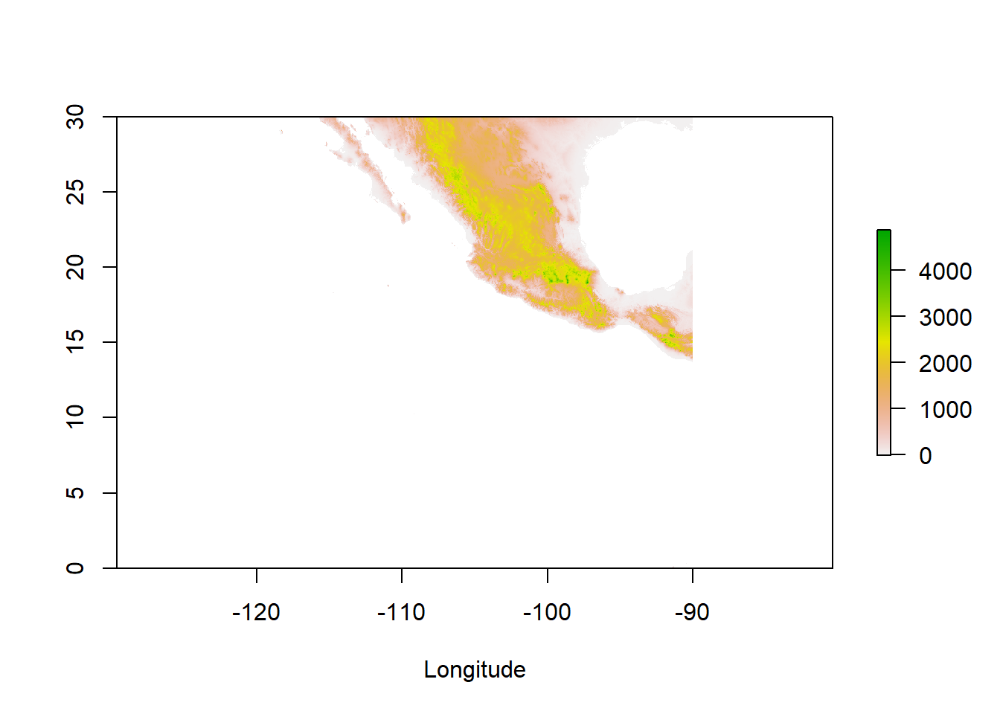
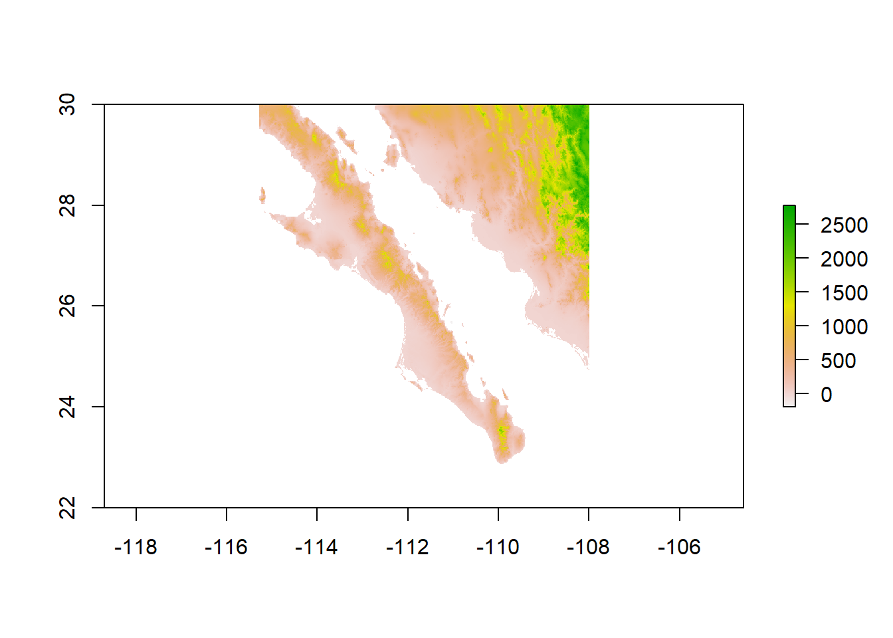
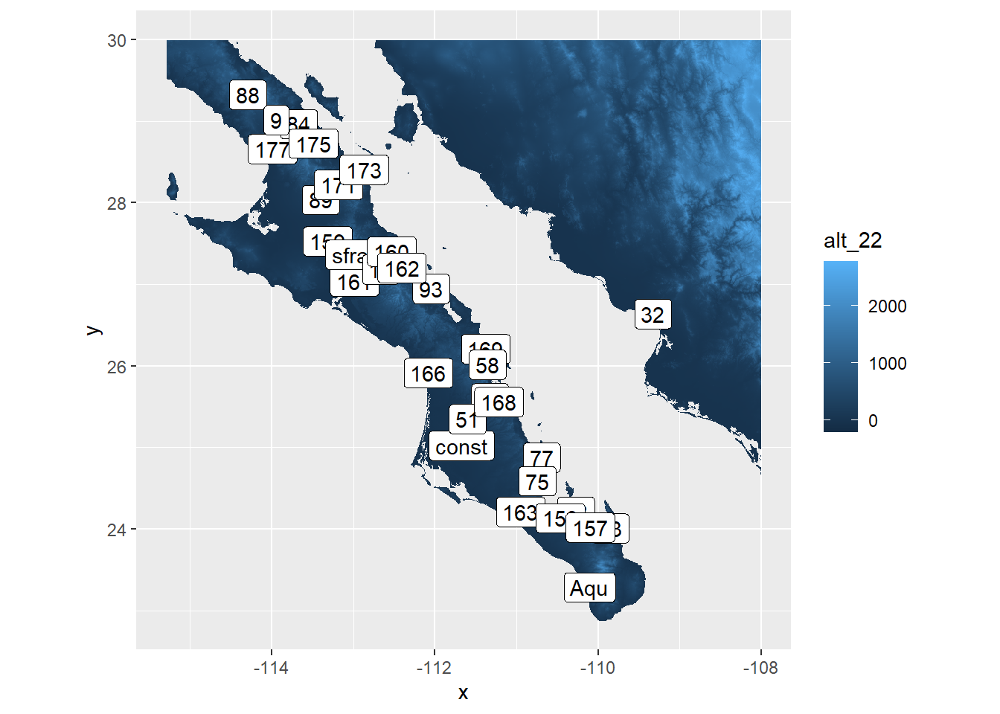
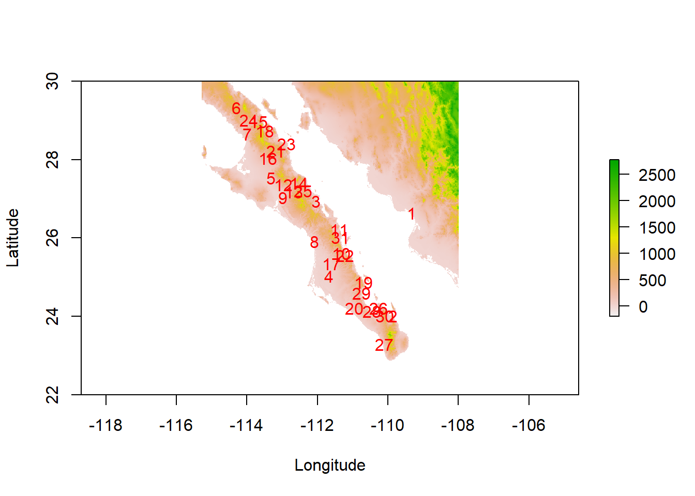
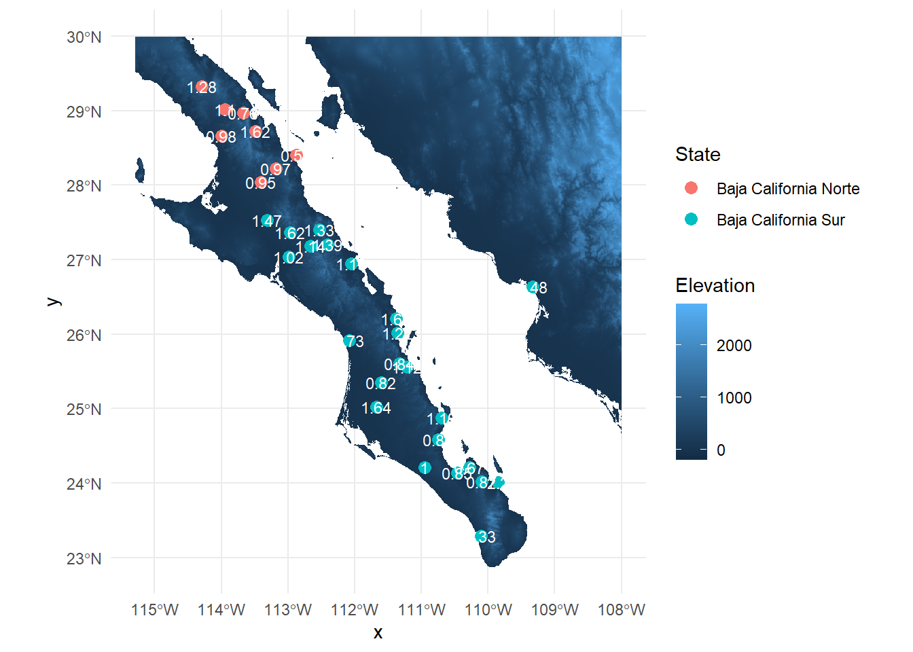

raster_url <- "https://github.com/DyerlabTeaching/Raster-Data/raw/main/data/alt_22.tif"
beetle_url <- "https://raw.githubusercontent.com/DyerlabTeaching/Raster-Data/main/data/AraptusDispersalBias.csv"Raster Homework
Rasters are spatial continuous distributions of geospatial data. We have been shown that we an work with data in raster format using either raster and working on object directly, or via dplyr and using the normal data manipulation routines that we’ve learned for non-spatial data. In this in class exercise, you may use both of these techniques to load, manipulate, and display geospatial data.
The Raw Data
The data for this will be the same Baja California data we showed in the lectures on points and rasters.
The Questions
- Load the raster and point data in and crop to an appropriate size to display the locations of the sampling plots and make a label for each site.
library( tidyverse )── Attaching core tidyverse packages ──────────────────────── tidyverse 2.0.0 ──
✔ dplyr 1.1.4 ✔ readr 2.1.5
✔ forcats 1.0.0 ✔ stringr 1.5.1
✔ ggplot2 3.5.1 ✔ tibble 3.2.1
✔ lubridate 1.9.3 ✔ tidyr 1.3.1
✔ purrr 1.0.2
── Conflicts ────────────────────────────────────────── tidyverse_conflicts() ──
✖ dplyr::filter() masks stats::filter()
✖ dplyr::lag() masks stats::lag()
ℹ Use the conflicted package (<http://conflicted.r-lib.org/>) to force all conflicts to become errorslibrary( raster )Loading required package: sp
Attaching package: 'raster'
The following object is masked from 'package:dplyr':
selectlibrary( sf ) Linking to GEOS 3.12.1, GDAL 3.8.4, PROJ 9.3.1; sf_use_s2() is TRUEelev <- raster( raster_url )
read_csv( beetle_url ) %>%
st_as_sf( coords = c("Longitude","Latitude"),
crs = 4326 ) -> beetles Rows: 31 Columns: 9
── Column specification ────────────────────────────────────────────────────────
Delimiter: ","
chr (1): Site
dbl (8): Males, Females, Suitability, MFRatio, GenVarArapat, GenVarEuphli, L...
ℹ Use `spec()` to retrieve the full column specification for this data.
ℹ Specify the column types or set `show_col_types = FALSE` to quiet this message.beetlesSimple feature collection with 31 features and 7 fields
Geometry type: POINT
Dimension: XY
Bounding box: xmin: -114.2935 ymin: 23.2855 xmax: -109.327 ymax: 29.32541
Geodetic CRS: WGS 84
# A tibble: 31 × 8
Site Males Females Suitability MFRatio GenVarArapat GenVarEuphli
* <chr> <dbl> <dbl> <dbl> <dbl> <dbl> <dbl>
1 32 40 27 0.0563 1.48 0.144 0.219
2 73 11 5 0.146 2.2 0.137 0.253
3 93 25 21 0.163 1.19 0.163 0.133
4 const 18 11 0.174 1.64 0.280 0.235
5 159 22 15 0.188 1.47 0.160 0.0809
6 88 23 18 0.219 1.28 0.266 0.176
7 177 49 50 0.262 0.98 0.338 0.05
8 166 19 26 0.267 0.731 0.120 0.286
9 161 64 63 0.279 1.02 0.252 0.171
10 64 16 19 0.288 0.842 0.141 0.251
# ℹ 21 more rows
# ℹ 1 more variable: geometry <POINT [°]>plot( elev, xlab="Longitude" )
beetles %>%
st_union() %>%
st_buffer( dist = 1 ) %>%
st_bbox() xmin ymin xmax ymax
-114.29354 23.28549 -109.32699 29.32542 baja_extent <- extent( c(-115.29354,-108,22,30))
baja_elev <- crop( elev, baja_extent )
baja_elevclass : RasterLayer
dimensions : 960, 875, 840000 (nrow, ncol, ncell)
resolution : 0.008333333, 0.008333333 (x, y)
extent : -115.2917, -108, 22, 30 (xmin, xmax, ymin, ymax)
crs : +proj=longlat +datum=WGS84 +no_defs
source : memory
names : alt_22
values : -202, 2774 (min, max)plot( baja_elev) 
plot( baja_elev, xlab="Longitude", ylab="Latitude")
text( beetles, pch=15, col="red" )
library( ggrepel )
baja_elev %>%
rasterToPoints() %>%
as.data.frame() %>%
ggplot() +
geom_raster( aes(x,y,fill=alt_22) ) +
geom_sf_label( aes(label=Site),
data = beetles) +
coord_equal()Warning in st_point_on_surface.sfc(sf::st_zm(x)): st_point_on_surface may not
give correct results for longitude/latitude data
- Use the click() function to crop the raster and filter the sites to include only the sampling locations that are in the Cape regions (e.g., south of site labeled #75). Plot the raster of elevation and all cape region locales with sex-ratio represented as the size of the plot symbol.
plot( baja_elev, xlab="Longitude", ylab="Latitude")
text( beetles, pch=16, col="red" )
click( baja_elev,
n=2 ) -> points
- The peninsula of Baja California is divided into the States of Baja California Norte and Baja California Sur. The border between these states is at 28° Latitude. Divide the sample locations into groups based upon which state they are located and plot the average sex ratio of the sample sites partitioned by each site.
beetles <- beetles %>%
mutate( State = ifelse(st_coordinates(.)[,2] > 28, "Baja California Norte", "Baja California Sur" ) )
average_sex_ratio <- beetles %>%
group_by( State, Site ) %>%
summarize( avg_sex_ratio = mean( MFRatio, na.rm = TRUE ), .groups = 'drop' )
baja_elev %>%
rasterToPoints() %>%
as.data.frame() %>%
ggplot() +
geom_raster( aes(x = x, y = y, fill = alt_22 ) ) +
geom_sf(data = beetles, aes( color = State, geometry = geometry ), size = 3) +
geom_text( data = average_sex_ratio, aes( x = st_coordinates( geometry )[,1],
y = st_coordinates( geometry )[,2],
label = round( avg_sex_ratio, 2)),
color = "white", size = 3) +
coord_sf() +
labs(fill = "Elevation", color = "State" ) +
theme_minimal()
- Is there a relationship between the observed sex ratio and the elevation at that site? Plot these, and in the text, perform a correlation test (cor.test()) and report the values as if you were writing them up in a results section.
beetles <- beetles %>%
mutate( Elevation = raster::extract( baja_elev, st_coordinates( beetles ) ) )
correlation_test <- cor.test( beetles$MFRatio, beetles$Elevation )
correlation_test
Pearson's product-moment correlation
data: beetles$MFRatio and beetles$Elevation
t = -0.55949, df = 29, p-value = 0.5801
alternative hypothesis: true correlation is not equal to 0
95 percent confidence interval:
-0.4415112 0.2605426
sample estimates:
cor
-0.1033377 A correlation test was conducted to assess the relationship between sex ratio (MFRatio) and elevation across sample sites. The results indicated a non-significant negative correlation between sex ratio and elevation, t = -0.55949, df = 29, p-value = 0.5801, with a 95% confidence interval [-0.4415112 0.2605426], and r = -.103. The negative r value attributes to the negative correlation. Since the p value is well above .05, it is assumed to be non-significant.
This suggests that there is no statistically significant correlation between sex ratio and elevation within the sampled Baja California region.